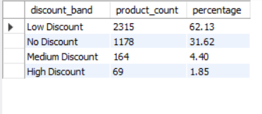
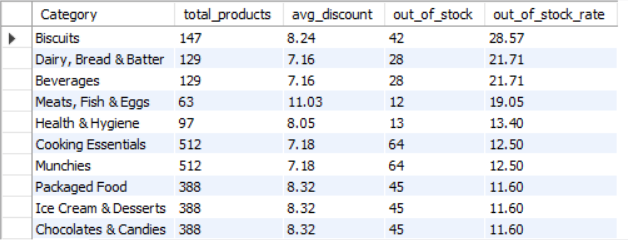
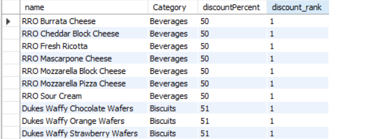
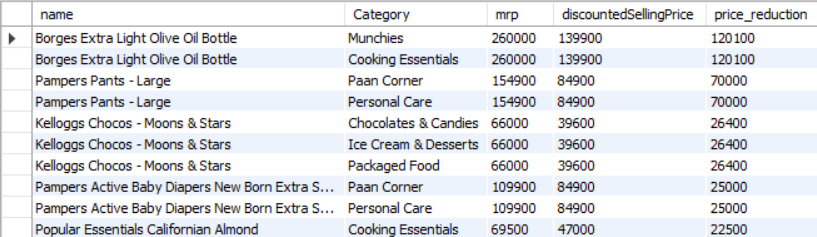

MYSQL • DATA ANALYSIS • SQL
Exploring product pricing, discounts, inventory availability, and category-level patterns using MySQL.
This project analyzes a Zepto product catalog dataset using MySQL to understand product discounts, inventory availability, category-level stock conditions, and price reductions.
The analysis covers data cleaning, validation, transformation, exploratory SQL analysis, and advanced SQL techniques including CTEs, subqueries, aggregations, and window functions.
Raw Records
Final Records
Out-of-Stock Products
Dataset Columns
Loaded the raw dataset into a MySQL staging table before performing transformations.
Checked missing values, duplicate records, record counts, and price anomalies.
Used TRIM(), CASE expressions and DISTINCT to clean and transform the data.
Created the final analytical table containing 3,726 cleaned records.
Instead of simply running SQL queries, the analysis was structured around practical business questions.
ANALYSIS 01
Products were grouped into discount bands using SQL CASE expressions to understand how discounts are distributed across the catalog.

ANALYSIS 02
Category-level aggregation was used to calculate total products, out-of-stock products, and out-of-stock percentages.

ANALYSIS 03
Window functions were used to rank products within each category based on discount percentage.

ANALYSIS 04
The absolute difference between MRP and selling price was calculated to identify products with the largest price reductions.

Most products fall into the lower discount bands, while highly discounted products form a much smaller portion of the catalog.
Out-of-stock rates vary considerably across product categories, highlighting differences in inventory availability.
Window functions make it possible to identify the highest-discounted products within each category while preserving individual records.
Comparing MRP with discounted selling price highlights products with the largest absolute price reductions.
View the complete SQL analysis and project source code.